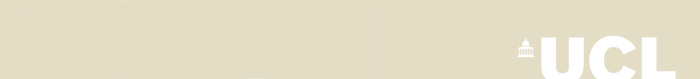

UCL IEP Team 12
Go Back

Credits
Links to articles used in research::
UCL PPLV Department
EPSRC
GCHQ
Gateway to Research (1)
Gateway to Research (2)
Gateway to Research (3)
Gateway to Research (4)
Gateway to Research (5)
The Register
CS COWL Department
COWL Homepage
Engadget
Network World
Definitions.net
Linux Mag
Template Design